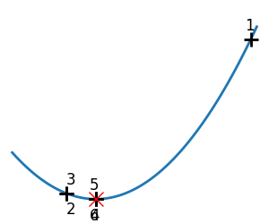
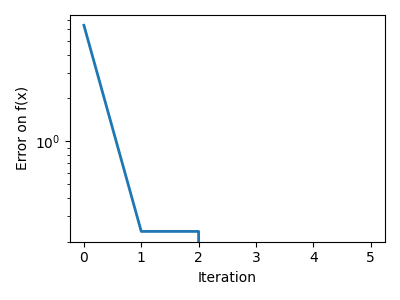
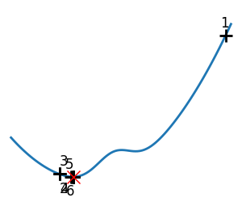
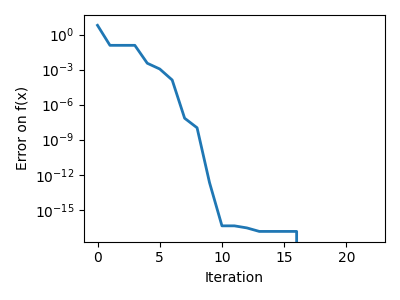

Note
Go to the end to download the full example code
2.7.4.7. Brent’s method¶
Illustration of 1D optimization: Brent’s method
- 
- 
- 
- 
Converged at 6
Converged at 23
import numpy as np
import matplotlib.pyplot as plt
import scipy as sp
x = np.linspace(-1, 3, 100)
x_0 = np.exp(-1)
def f(x):
return (x - x_0) ** 2 + epsilon * np.exp(-5 * (x - 0.5 - x_0) ** 2)
for epsilon in (0, 1):
plt.figure(figsize=(3, 2.5))
plt.axes([0, 0, 1, 1])
# A convex function
plt.plot(x, f(x), linewidth=2)
# Apply brent method. To have access to the iteration, do this in an
# artificial way: allow the algorithm to iter only once
all_x = []
all_y = []
for iter in range(30):
result = sp.optimize.minimize_scalar(
f,
bracket=(-5, 2.9, 4.5),
method="Brent",
options={"maxiter": iter},
tol=np.finfo(1.0).eps,
)
if result.success:
print("Converged at ", iter)
break
this_x = result.x
all_x.append(this_x)
all_y.append(f(this_x))
if iter < 6:
plt.text(
this_x - 0.05 * np.sign(this_x) - 0.05,
f(this_x) + 1.2 * (0.3 - iter % 2),
iter + 1,
size=12,
)
plt.plot(all_x[:10], all_y[:10], "k+", markersize=12, markeredgewidth=2)
plt.plot(all_x[-1], all_y[-1], "rx", markersize=12)
plt.axis("off")
plt.ylim(ymin=-1, ymax=8)
plt.figure(figsize=(4, 3))
plt.semilogy(np.abs(all_y - all_y[-1]), linewidth=2)
plt.ylabel("Error on f(x)")
plt.xlabel("Iteration")
plt.tight_layout()
plt.show()
Total running time of the script: (0 minutes 0.214 seconds)